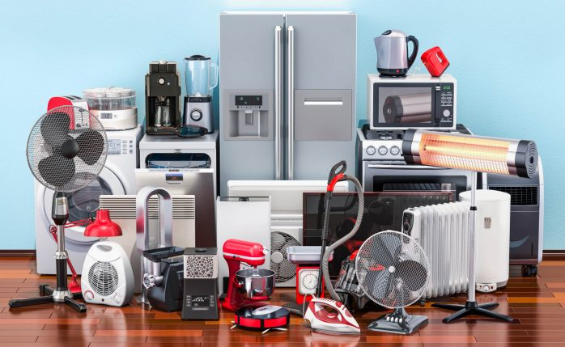

早速ですが、あなたはどの様なモチベーションで
システムデザイン学科という学科を選びましたか？
システムデザイン学科という学科を選びましたか？
高校の情報の授業で、 家電を自分なりに
開発してプレゼンしてようという授業が
あったんですよ。そこで家電開発にすごい興味が湧いて、 同時に法政大学の
システムデザイン学科というものに
興味を持ち始めました。
開発してプレゼンしてようという授業が
あったんですよ。そこで家電開発にすごい興味が湧いて、 同時に法政大学の
システムデザイン学科というものに
興味を持ち始めました。
そんな授業があったなんて、すごい学校ですね。
学力は本当に足りなくて、塾長とかにも
面談で求められたんですけど。まあまあ、僕なら行けると無理を言ってきました。
面談で求められたんですけど。まあまあ、僕なら行けると無理を言ってきました。

家電に興味があってこの学校を選んだということですが、
大学に入ってから、何か気持ちに変化はありましたか？
大学に入ってから、何か気持ちに変化はありましたか？
はい、変わりました。
どう変わったんですか？
やっぱり気持ちの変化がありました。
きっかけは先月、ガードレールを壊して
しまったことです。その時にやっぱり
デザインって大切だな、標識とかって
あるだけじゃ意味ないんだなと。
どう注意させるか、考えさせられました。
きっかけは先月、ガードレールを壊して
しまったことです。その時にやっぱり
デザインって大切だな、標識とかって
あるだけじゃ意味ないんだなと。
どう注意させるか、考えさせられました。
なるほど。その中で、より自分の中でデザインに対する
考え方が固まってきたということですか？
考え方が固まってきたということですか？
いや、まだまだですね。でも、最近は
デザインの奥深さを感じることが
多いですね。
デザインの奥深さを感じることが
多いですね。
なるほど、詳しく教えてください。
デザインって簡単には言えないなって。
デザインというものは大きなもの
なのだと。まるで、世界ってデザイン
みたいなことです。
デザインというものは大きなもの
なのだと。まるで、世界ってデザイン
みたいなことです。
なるほど。
世界はデザインで繋がっているんですよ、全て。
マーケティングも人が求めるものや
サービスを届ける、人がその価値を得る
ことができるという点においてデザイン
だと思っています。つまりは、デザイン
とは問題の本質を解決するものだなと。
マーケティングも人が求めるものや
サービスを届ける、人がその価値を得る
ことができるという点においてデザイン
だと思っています。つまりは、デザイン
とは問題の本質を解決するものだなと。
ありがとうございます。最後にメッセージをお願いします。
これからもデザインについて
学び続けていきたいと思います。
学び続けていきたいと思います。